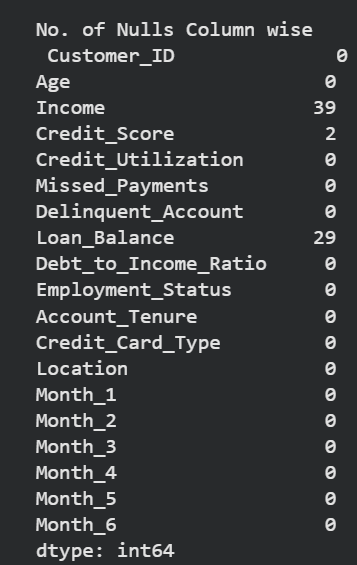
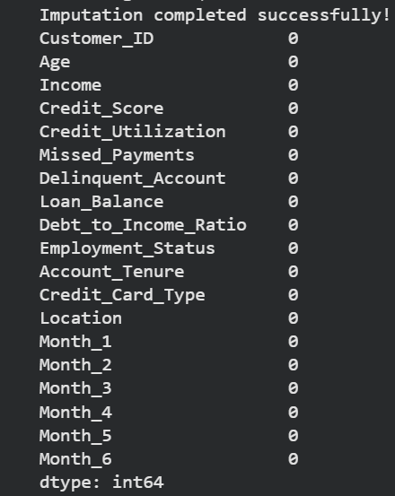

Credit Risk Data Preprocessing & Imputation Pipeline
A structured preprocessing pipeline for a customer credit dataset, designed to resolve missing values, normalize categorical fields, and produce a clean dataset ready for analytics and machine learning.
Introduction
This project uses a credit risk dataset containing customer profiles and financial information such as Income, Credit_Score, Credit_Utilization, Loan_Balance, Employment_Status, and monthly payment indicators. The raw data had several quality issues that needed resolution before modeling
Key problems identified:
- Missing values in Income, Credit_Score, and Loan_Balance
- Inconsistent categories in Employment_Status
- Potential outliers in Credit_Utilization
- Raw dataset not ready for analytics, reporting, or ML
The pipeline addresses these issues through inspection, standardization, imputation, and export of a final dataset that is complete, normalized, and analysis-ready.
Before vs After Imputation
{kind=link}

Before: missing values by column.
{kind=link}

After: Imputed dataset with no missing values.
Pipeline Overview
Below is a clickable sequence of preprocessing stages. Each stage includes a short description, the reason it was important, and the result generated.
Data Inspection
Identifying data quality issues early prevents bad imputation choices and downstream surprises.
print(df.isnull().sum())
#Check unique values in Employment_Status
print(df['Employment_Status'].value_counts())Result: clear visibility into the columns that required standardization and imputation.
Data Standardization
Employment status values were normalized by lowercasing and mapping variations to consistent labels.
Inconsistent categories can cause incorrect grouping and poor feature interpretation.
df['Employment_Status'] = df['Employment_Status'].str.lower().str.strip()
employment_map = {'emp':'employed','self-employed':'self-employed','unemployed':'unemployed','employed':'employed','retired':'retired'}
df['Employment_Status'] = df['Employment_Status'].map(employment_map).fillna(df['Employment_Status'])Result: standardized categorical values that are ready for feature encoding.
Missing Value Imputation
Different imputation strategies were used depending on the column: median for Credit_Score, group median for Loan_Balance, and predictive MICE for Income.
Each variable had a different distribution and missingness pattern, so a tailored approach preserves data integrity.
median_cs = df['Credit_Score'].median()
df['Credit_Score'] = df['Credit_Score'].fillna(median_cs)
median_loan_by_type = df.groupby('Credit_Card_Type')['Loan_Balance'].transform('median')
df['Loan_Balance'] = df['Loan_Balance'].fillna(median_loan_by_type)
# For MICE imputation of Income
imputer = IterativeImputer(estimator=RandomForestRegressor(),
max_iter=10,
random_state=42,
initial_strategy='median')Result: missing values were filled, improving dataset completeness without introducing obvious bias.
Feature Engineering
We also capped Credit_Utilization at 1.0 and encoded categorical fields for use with the final imputer.
Controlled feature ranges and consistent encoding improve model stability and interpretation.
df['Credit_Utilization'] = df['Credit_Utilization'].clip(upper=1.0)
df_for_impute = pd.get_dummies(df_for_impute, columns=cat_cols, drop_first=True)Result: features were normalized and prepared for analytics-ready export.
Final Output
The final transformed dataset is exported as transformed_dataset.xlsx, providing a clean input for dashboards, reports, and machine learning models.
The dataset is now ready for analytics, predictive modeling, and production-ready reporting.
df.to_excel("transformed_dataset.xlsx")